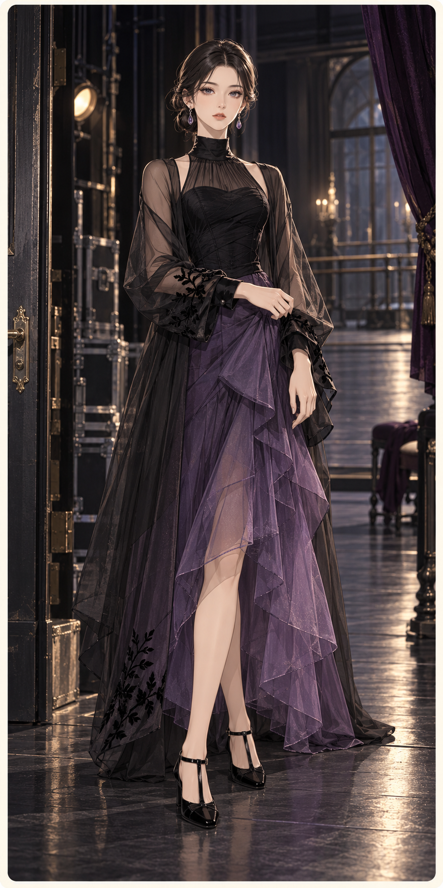
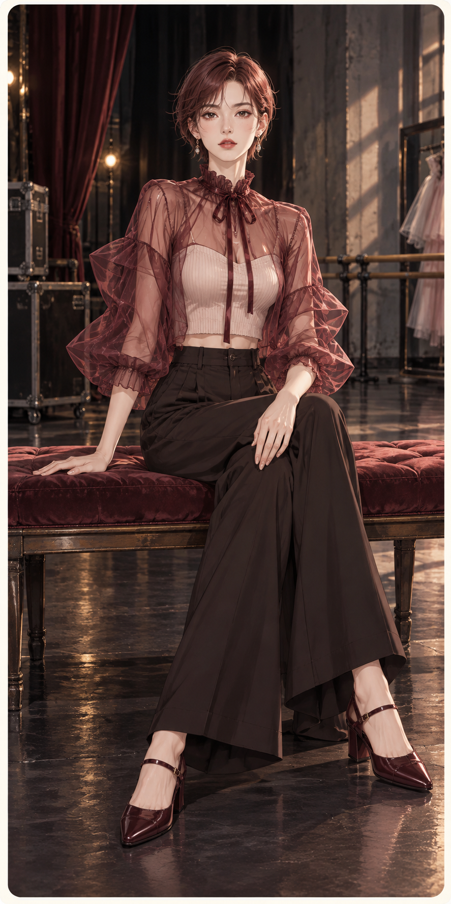
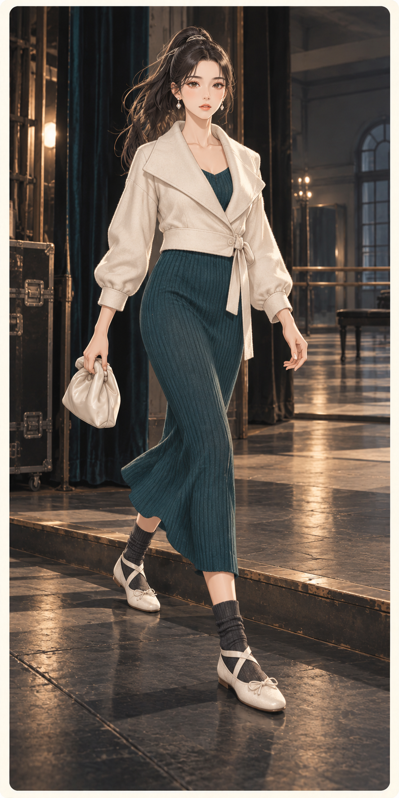

S27-F01黑紫幕帘
Black-Violet Curtains
研究：Rodarte
已核验公开系列／产品研究，沿用前批研究图
黑色透明长外层与梅紫不规则纱裙叠合，盘辫维持低调戏剧感。
逐件品牌参考与改造
墨黑／紫罗兰／旧银
廓形：不对称纱裙、长外层
面料设计目标：薄纱／雪纺／绒面贴边
参考图 · 原站
参考重点：参考图中可观察：植物贴花、深浅透明与长柱形。颜色、长度、分割和搭配重新设计。
不对称纱裙Rodarte
植物贴花、深浅透明与长柱形；本卡转为「不对称纱裙」，重新组织颜色、比例与分割。面料设计目标：薄纱／雪纺／绒面贴边。
长外层Rodarte
植物贴花、深浅透明与长柱形；本卡转为「长外层」，重新组织颜色、比例与分割。面料设计目标：薄纱／雪纺／绒面贴边。
鞋履、包与发饰原创搭配
本卡自定鞋履、包型和发型细节，不标作品牌原款。

S27-F02暗红排练
A Dark-Red Rehearsal
研究：Simone Rocha
已核验公开系列／产品研究，沿用前批研究图
锈粉透明宽袖上层配深巧克力长裤，铜色短发强化暖暗气氛。
逐件品牌参考与改造
暗红／棕黑／粉白
廓形：短纱罩、阔腿长裤
面料设计目标：欧根纱／绉布／细针织
参考图 · 原站
参考重点：参考图中可观察：领口系带、透明包裹与抽量。颜色、长度、分割和搭配重新设计。
短纱罩Simone Rocha
领口系带、透明包裹与抽量；本卡转为「短纱罩」，重新组织颜色、比例与分割。面料设计目标：欧根纱／绉布／细针织。
阔腿长裤Simone Rocha
领口系带、透明包裹与抽量；本卡转为「阔腿长裤」，重新组织颜色、比例与分割。面料设计目标：欧根纱／绉布／细针织。
鞋履、包与发饰原创搭配
本卡自定鞋履、包型和发型细节，不标作品牌原款。

S27-F03象牙色返场
An Ivory Return
研究：Repetto
已核验公开系列／产品研究，沿用前批研究图
奶油短裹身外套与深青针织长裙相接，高马尾和袜鞋带出后台感。
逐件品牌参考与改造
象牙／深青／炭黑
廓形：短裹外套、长柱形裙
面料设计目标：精纺／罗纹针织／低光皮
参考图 · 原站
参考重点：参考图中可观察：浅鞋口、柔软袜层与带状固定。颜色、长度、分割和搭配重新设计。
短裹外套原创搭配
本卡原创服装层次；Repetto 仅提供日常平底鞋的研究依据。
长柱形裙原创搭配
本卡原创服装层次；Repetto 仅提供日常平底鞋的研究依据。
鞋履、包与发饰Repetto
鞋履参考浅口与带状关系，重新设计带距和鞋面；服装为原创层次。